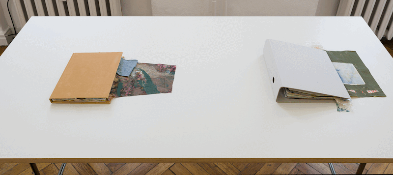
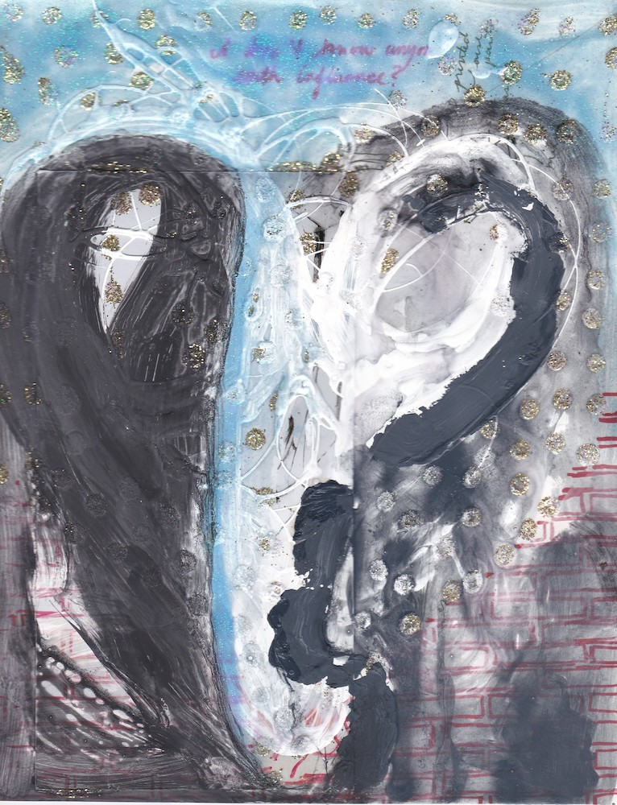

| Book 03 and | Book 04 |
 |
|||||||
|---|---|---|---|---|---|---|---|---|---|
| part of Dear St. Anthony Please Come Around, Something’s Been Lost and Cannot Be Found @Select, Berlin, April 2 - 24, 2022 | |||||||||
 |
|||
|---|---|---|---|
| Sorry Music, BBBerlin at Sangt Hipolyt, Berlin, April 1 - 22, 2022 | |||
 |
Book 02 |
Book 01 |  |
||
|---|---|---|---|---|---|